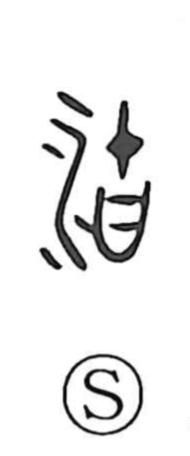

湖

Uncategorized
Kun: mizuumi | On: ko
lake
Explanation
This is a phono-semantic character: the water element on the left marks it as a water feature, while 胡 on the right provides the sound (yielding the on-reading ko) and carries an image from antiquity—the drooping flesh beneath an animal’s jaw, like the pouch of cormorants and pelicans. Shirakawa likens a lake to a river’s great jaw-pouch: when a river swells and spills over, it forms side basins and backwaters where water accumulates. From this image of a broad, collecting pouch beside a stream, 湖 comes to mean a lake.